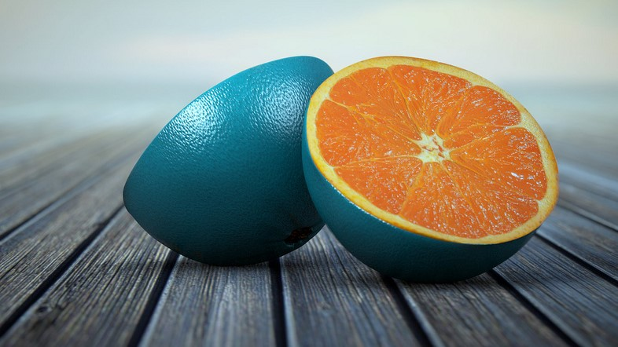

Thinking of asking a friend for advice? Think again!
Take this awesome quiz to learn who can help you reach your goals!Posted on April 1, 2018 by Elena Agapie
Whom should you ask for help to get you started with exercise?

Whom should you ask for fashion advice?

Whom should you ask to help you reach your goals, if you worry about being judged?
Whom should you ask for new ideas to help you reach your goals?
